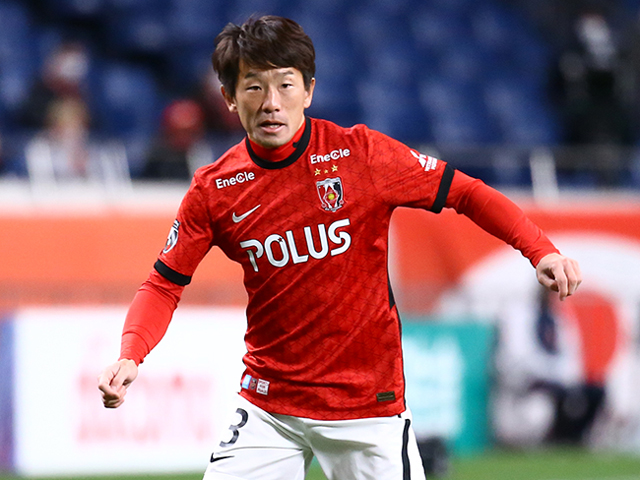
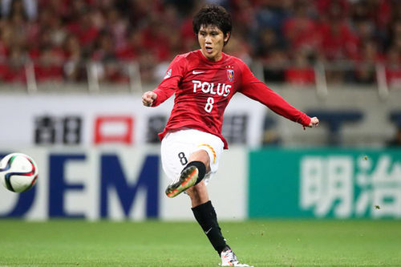
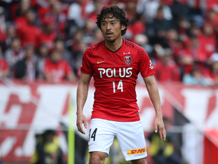

<!DOCTYPE html>
<html lang="ja">
<head>
<meta charset="UTF-8">
<title>新背番号</title>
<script src="ex7-1.js"></script>
<script src="ex7-2.js"></script>
<script src="ex7-3.js"></script>
<script src="ex7-4.js"></script>
<link rel="stylesheet" href="imagechange.css"></linkrel
</head>
<body>
<aside class="ad">
<h1>新背番号</h1>
<a href="https://www.urawa-reds.co.jp/topteam/">
<section>
<h1>2022シーズン背番号一覧</h1>
<p>背番号が変わった選手は4名！</p>
</section></a>
<a href=""></a>
<section>
<h1>背番号3　伊藤敦樹</h1>
<p>浦和のレジェンド宇賀神から引継いだ背番号３</p>
</section></a>
<input type="button" value="この選手へ！"onclick="setTimeout('img()',2000)">

<br>
<a href=""></a>
<section>
<h1>背番号8　小泉</h1>
<p>柏木陽介が付けた背番号８</p>
</section></a>
<input type="button" value="この選手へ！"onclick="setTimeout('img()',2000)">


<a href=""></a>
<section>
<h1>背番号14　関根</h1>
<p>平川忠明の14を継いだ漢</p>
</section></a>
<input type="button" value="この選手へ！"onclick="setTimeout('img()',2000)">
</a>
<section>
<h1>背番号22　柴戸海</h1>
<p>昨シーズン限りで引退した阿部勇樹の22を背負う覚悟</p>
</section></a>
<input type="button" value="この選手へ！"onclick="setTimeout('img()',2000)">
<img src="image/abe.urawa.webp" id="abe" alt="22gazou"class="imagechange"